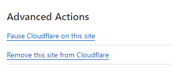
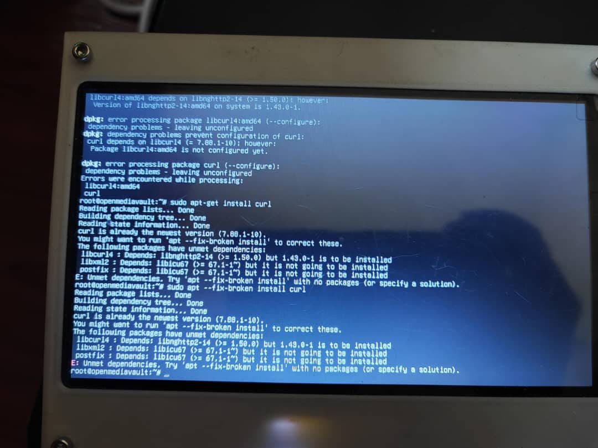

I know people always said backup everything and document every thing but is we doing it. I myself admit I don’t do “Documentation” and “Backup”. But after learning self-hosted the important of documentation and backup is very important (This also why I start making this website), because we will encounter many problems, some is easy to solve (just google it) but some are to obscure and cannot found in the internet (sometimes the solution is plain and simple but we looked at wrong perspective). Or maybe you lose steps and skipping important bits when you doing other side project and may affect you later.
When I starting using Cloudflare tunnel to add alternative to my VPS I encounter a very strange bug. I have two domains, we call “DomainA.com” and “DomainB.com”. I wanted to using “DomainA.com” as my selfhosted address. I follow the tutorial online, spin up docker Cloudflare tunnel and nothing happen when I open the address. Maybe, I have selected wrong internal IP or protocol but still cannot connected. Firewall maybe (because I am student, so …thanks my Uni for provide free internet), but when check connection in docker it connected to internet. Maybe all docker need in same network, but still problem. DNS record for domain also no problem as it all suing default setting. I try google everything but seams nothing like me.
After 3 days of troubleshooting I don’t know what’s the problem, so I give up and try using “DomainB.com” and surprise, just firs time try it got working. So, what the problem between these two domains. This all domain is on same registar and purchased at same day so what different.
Here is my stupidity, on Cloudflare page of the domain, at the very bottom right there is “Advance Action” and I may have clicked “Pause”. After resume back all can be access without problem. 3 days wasted because on one button at bottom of page. Now I put the info on my self-documentation to check every button (even though the name seams not important).

That small option on Cloudflare that cause problem for 3 days
There is one time I need to add capability for “Hardware Acceleration” for my Jellyfin server. So I read the documentation on website and just follow what required. But after adding and configure all package the HWA seams not working. The HVEC 10bit seams not functioning. After doing some googling maybe I need add CUDA as from Intel spec the chip support HVEC. But still problem, maybe it need suing non-free apt, so I enable backport (Here the problem begins).
After adding non-free apt seams it partially working but sudden cut off. I check i-GPU load seams no problem but after a minute it just stop. Maybe I need specific driver version as some forum suggest that, but still problem. After debug the Jellyfin stream maybe I know the answer. A Github user also encounter the same problem but actually the CPU I am currently using is not supporting 10bit HVEC for transcoding (even with CUDA install), even though it said support HVEC 10-bit (actually only for decode only not encoding). So I undo all thing (but forget about the backport), and all running without a problem (minus cannot transcode HVEC 10 bit)
After few weeks I learn about securing the OS, one of thing is to disable backport. I disable backport and check for update. There suddenly have 500+ update maybe because turning off backport. Weird but I wait for all installation and reboot back the server after done update. But after few minutes I cannot reach the server. Maybe IP address have being changed. But when check on server directy is show it not detecting LAN and have problem about Nginx. Weird, maybe I need enable backport again. But cannot as I meet with conflicting dependency. So, I resort to last option, backup important file to pendrive, but in surprise USB not working. Congratulation I brick the OS. Maybe I can backup to my ZFS drive, I think. But when in the main directory some files/folders are missing. But I don’t care just copy all important configs to ZFS storage and format the OS is the best solution.
After fresh install and go back to my ZFS, there is not backup files that I copy. I search everywhere but nothing. This my fault is not confirming the files that being copy is exist before formatting, and my fault not doing weekly/ monthly backup and verified the backup files. So, majority of my diary about selfhosting just puff missing after I bricked the OS.

Pain peko peko